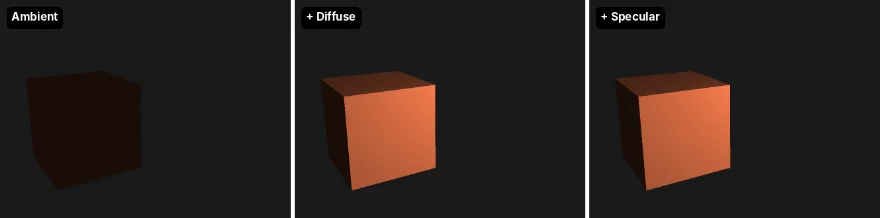

Lighting
Basic Lighting#
examples/Sources/08-BasicLighting, run with swift run BasicLighting. Download all examples or see how to run them.Real light is hopelessly complicated, so real-time graphics uses approximations. The classic one is the Phong lighting model, which builds the final color from three simple parts:
- Ambient: a small constant amount of light everywhere, standing in for light that has bounced around the room.
- Diffuse: the surface is brighter the more directly it faces the light.
- Specular: the shiny highlight where the light reflects toward the viewer.
Ambient#
float ambientStrength = 0.1;
float3 ambient = ambientStrength * uniforms.lightColor;
float3 result = ambient * uniforms.objectColor;
On its own this just makes the cube dark, but it prevents unlit sides from being pure black.
Diffuse#
Diffuse lighting needs two directions at each fragment: the surface normal, and the direction from the fragment to the light. The cosine of the angle between them, given by the dot product of the two unit vectors, is the brightness: 1 when the light hits head on, 0 when it grazes the surface.
Our cube already carries normals. The fragment function needs the normal and the fragment's position in world space, so the vertex function passes both:
struct Uniforms {
float4x4 model;
float4x4 view;
float4x4 projection;
float3x3 normalMatrix;
};
struct VertexOut {
float4 position [[position]];
float3 worldPosition;
float3 normal;
float2 uv;
};
vertex VertexOut vertex_main(VertexIn in [[stage_in]],
constant Uniforms &uniforms [[buffer(1)]]) {
VertexOut out;
float4 world = uniforms.model * float4(in.position, 1.0);
out.position = uniforms.projection * uniforms.view * world;
out.worldPosition = world.xyz;
out.normal = uniforms.normalMatrix * in.normal;
out.uv = in.uv;
return out;
}
The normal matrix#
Normals are directions, so translation must not affect them, and non-uniform scaling distorts them if you use the model matrix directly. The correct matrix for normals is the inverse transpose of the upper-left 3×3 of the model matrix. Compute it on the CPU:
struct Uniforms {
var model: float4x4
var view: float4x4
var projection: float4x4
var normalMatrix: float3x3
}
uniforms.normalMatrix = uniforms.model.upperLeft.inverse.transpose
If the model matrix only rotates and scales uniformly, the upper-left 3×3 itself works, but the inverse transpose is always right.
The diffuse term#
struct FragmentUniforms {
float3 objectColor;
float3 lightColor;
float3 lightPosition;
float3 viewPosition;
};
fragment float4 fragment_main(VertexOut in [[stage_in]],
constant FragmentUniforms &uniforms [[buffer(1)]]) {
float3 normal = normalize(in.normal);
float3 lightDir = normalize(uniforms.lightPosition - in.worldPosition);
float3 ambient = 0.1 * uniforms.lightColor;
float diff = max(dot(normal, lightDir), 0.0);
float3 diffuse = diff * uniforms.lightColor;
return float4((ambient + diffuse) * uniforms.objectColor, 1.0);
}
Two details matter. Interpolated normals are no longer unit length, so normalize again in the fragment function. And max(..., 0.0) stops surfaces facing away from the light from getting negative light.
Specular#
A highlight appears where the light bounces off the surface straight into the eye. Reflect the light direction around the normal and compare the result with the direction to the viewer:
float3 viewDir = normalize(uniforms.viewPosition - in.worldPosition);
float3 reflectDir = reflect(-lightDir, normal);
float spec = pow(max(dot(viewDir, reflectDir), 0.0), 32.0);
float3 specular = 0.5 * spec * uniforms.lightColor;
float3 result = (ambient + diffuse + specular) * uniforms.objectColor;
return float4(result, 1.0);
reflect expects a vector pointing toward the surface, hence the minus sign. The exponent, 32 here, is the shininess: higher values give a smaller, sharper highlight.
On the Swift side, fill in the new fields each frame:
struct FragmentUniforms {
var objectColor: Float3
var lightColor: Float3
var lightPosition: Float3
var viewPosition: Float3
}
fragmentUniforms.lightPosition = lightPosition
fragmentUniforms.viewPosition = camera.position
The cube now has clearly distinct faces and a highlight that slides across them as you move.
World space or view space?
We light in world space because it is the easiest to reason about. Lighting in view space works equally well, and there the viewer is always at the origin. Whichever you choose, every vector in a calculation must be in the same space.

Exercises#
- Move the light in a circle around the cube over time.
- Try shininess values of 2, 8, 64 and 256.
- Do the whole lighting calculation in the vertex function and pass the resulting color to the fragment function. This is Gouraud shading. Why does the highlight look worse?